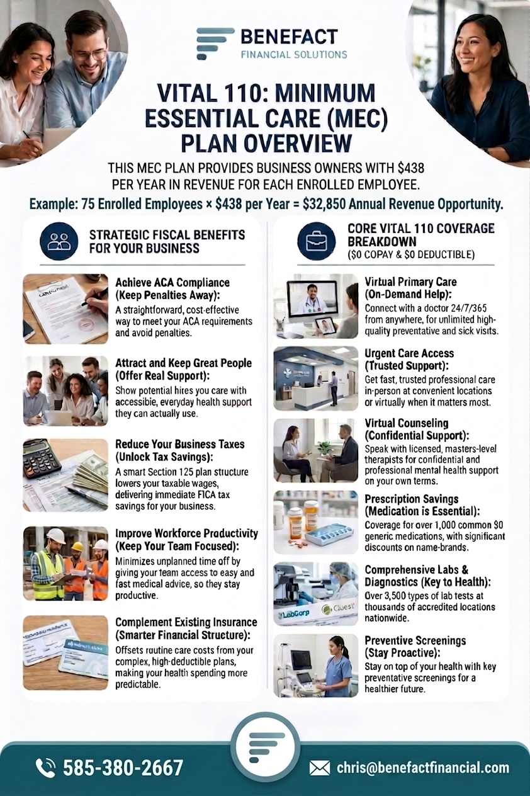

The Vital 110 plan by Health Compass Inc., offered through Benefact Financial Solutions, is a Section 125 plan design. For organizations with 10 or more employees, it is built as a no-net-cost benefit for the company and the workforce.

- $0Copays on the everyday benefits in the design
- $0Deductibles on that same front-door care
- $438Employer FICA savings per employee, per year
- 10+Employees required, each making $25,000 or more
How the Section 125 engine works
The mechanism sits inside IRC Section 125 cafeteria-plan rules.
1. Pre-tax deduction
Employees enroll in Vital 110 with pre-tax dollars under Section 125.
2. Lower taxable payroll
Gross taxable income drops, so the employer’s matching FICA (7.65%) drops with it, and so do employee payroll taxes.
3. Tax-free reimbursement
Qualifying claim payments are reimbursed tax-free on the employee’s paystub.
4. The savings fund the benefit
Those tax dollars pay for the administration of the healthcare benefits and additional voluntary coverage.
The company keeps the net tax surplus. Benefact’s figure for that surplus averages $500 per enrolled employee per year, alongside the $438 FICA savings described above. Your payroll, participation, and wages determine the actual result.
What employees use it for
Vital 110 is the everyday front door for routine care. It is meant to remove the out-of-pocket cost of ordinary visits and to make care available quickly, including 24/7 virtual care, so people do not skip the doctor because of a deductible.
On a traditional major medical plan, those same routine claims hit the policy and show up later in the renewal. Used beside a major medical plan, Vital 110 is the “deductible buster” described on our group benefits page: day-to-day utilization stays off the big policy.
Eligibility. The employer group must have at least 10 employees making $25,000 or more to offer the Vital 110 plan by Health Compass Inc.
The employer bottom line
Employers save $438 per employee per year in FICA payroll taxes and give the workforce high-value healthcare without an added net expense for the employees or the company. The plan can be implemented in any state.
John Sheehan, Executive Director of the Seneca-Salamanca Chamber of Commerce, put it this way: “The Vital 110 Plan by Health Compass Inc. is the best thing that we’ve ever offered the member businesses of our Chamber of Commerce.”